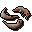
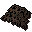
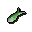
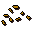
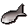
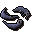

Fishing spot
| Config name | 0_45_49_saltfish |
| NPC id | 323 |
| Combat level | hidden |
| Options | Net, Bait |
| Category | saltfish |
| Wander range | does not move |
| Movement | nomove |
| Defined in | scripts/skill_fishing/configs/fishing.npc |
Fishing spot
I can see fish swimming in the water.
Show all 3 spawns on the world map → Open in knowledge graph →
Locations
| Area | Coordinates | Level | Count | Map |
|---|---|---|---|---|
| Rimmington | 2923, 3179 | 0 | 1 | view |
| Rimmington | 2924, 3181 | 0 | 1 | view |
| Rimmington | 2926, 3180 | 0 | 1 | view |
Fishing
| Fish | Level | Tool | Bait | XP |
|---|---|---|---|---|
 Raw shrimps | 1 |  Small fishing net | 10.0 | |
 Raw sardine | 5 |  Fishing bait | 20.0 | |
 Raw herring | 10 | Fishing bait | 30.0 | |
 Raw anchovies | 15 | Small fishing net | 40.0 |
Dialogue
You can't carry any more fish.
You need at least 5 Fishing to catch these fish.
You can't carry any more fish.